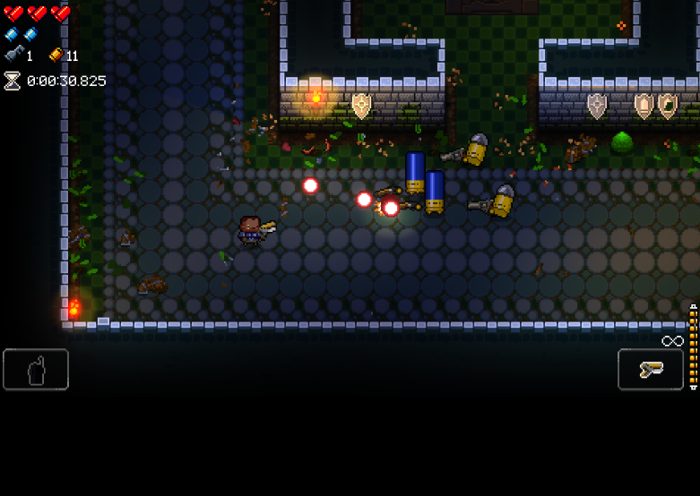
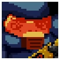
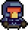
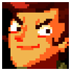
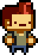
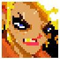
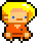
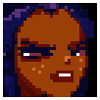
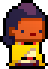

-
Lo primero a tener en cuenta es que es muy poco probable que consigas llegar al final en tus primeros intentos, si bien es posible, no es esperado.
-
ETG es un juego bastante complicado, por lo que perder incontables veces es lo más común, pero si puedes aprender de cada derrota y sigues jugando, en algún momento lograrás una victoria, una gran forma de mejorar es pensar en cosas como: que podría haber hecho diferente, o en dónde podría mejorar, pero nunca culpar a la mala suerte de no tener los objetos indicados o preferidos, ya que esa es la forma mas común de mentirse a uno mismo.
 -
A la hora de elegir un personaje, no tiene tanta importancia cual de los 4 elegir ya que todos son perfectos para comenzar, pero, como preferencia yo recomiendo empezar con el marine.
-

El marine comienza con una pistola básica, con un escudo, con una radio con la cual puede pedir munición para cuando consigas un arma que consuma dicha munición y un objeto pasivo el cual aumenta la puntería de las armas y el tiempo de carga de aquellas armas que la necesitan.
 -

El piloto comienza con una pistola poco precisa, con un compartimiento con el cual puede tener más munición en sus armas y dos objetos activos, un pequeño descuento en las tiendas y una ganzúa que le permite abrir cerraduras pero con una posibilidad de que falle.
 -

La convicta comienza con un revólver y con una escopeta de corto alcance, también tiene un objeto el cual le permite recibir un aumento en el daño infligido luego de recibir daño y un cóctel molotov para tirar y crear un charco de fuego.
 -

La cazadora comienza con un revólver básico, una ballesta increíblemente útil en el primer piso, y un compañero llamado “Junior” el cual consigue objetos como vida, llaves y otras cosas útiles de vez en cuando.
